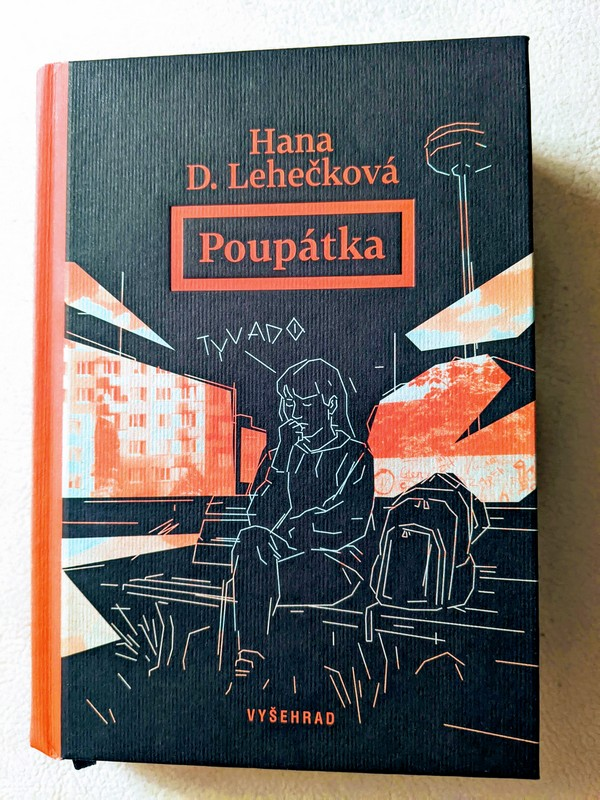

Tak toto byla opět jedna z těch neodložitelných knih, které vás pohltí natolik, že s nimi nějaký čas prostě žijete a pořád vám leží v hlavě, až dokud je nedočtete. Poupátka jsou ve spoustě směrech odvážným a originálním počinem. Nejlépe však knihu asi charakterizuje slovo “zneklidňující”, kterým je román otitulován už na přebale. Téma, o němž Poupátka pojednávají, je samo o sobě dost temné, ale z toho, jak o něm smýšlí a vypráví hlavní hrdinka příběhu - jedenáctiletá Františka - vám chvílemi bude doslova běhat mráz po zádech.
Františka žije v úplné, byť ne zcela dobře fungující rodině. Nedostatek rodičovské lásky a pozornosti si kompenzuje seberealizací v dramatickém kroužku, který vede poněkud svérázným způsobem charismatický Mirek. Postupně vyplouvá najevo jeho manipulativní a predátorská povaha, kterou si krůček po krůčku své svěřenkyně obmotává kolem prstu, aby se na nich posléze mohl dopouštět sexuálního násilí.
Co knize dodává ještě větší autenticitu je fakt, že je částečně autobiografická a vychází ze skutečné kauzy sexuálního zneužívání v dramatickém souboru v jižních Čechách, který autorka v 90. letech navštěvovala. To, o čem v knize píše, tak do jisté míry sama prožila ona nebo její kamarádky z kroužku.
Musím přiznat, že byť se jedná o tak těžké téma, kniha je místy i velice vtipná, obzvlášť v pasážích odehrávajících se mimo dramaťák, kdy se hlavní hrdinka pohybuje mezi svými vrstevníky, je prostě jen sama sebou a nechává čtenáři nahlédnout do svých myšlenek. Je obdivuhodné, s jakou lehkostí se Hana Lehečková dokázala vcítit do jedenáctileté holky. Někteří v recenzích autorce vyčítají příliš mnoho vulgarismů, nicméně mně to tedy přišlo celkem autentické - já si o slovníku současné mládeže nedělám příliš iluze :-D
Byť vám při čtení nebude zrovna lehko, Poupátka se čtou vyloženě sama. I v pasážích, kde se zdánlivě nic zajímavého neděje, má kniha spád a v závěru, kdy čtenář tuší ve vzduchu dramatické finále, už ho žene kupředu i obrovská zvědavost, kam celý příběh nakonec vyústí. Věřím, že poměrně otevřený konec řadu čtenářů asi příliš nepotěší, ale mně osobně k románu jako celku prostě sednul.

Myslím, že autorka si zaslouží obrovské uznání - jednak za to, že dokázala vyjít ven se svědectvím o něčem tak závažném, čím si sama prošla, a pak také za to, jak dokázala svou traumatizující zkušenost přetavit v opravdu mimořádné literární dílo. Poupátka jsou románem, který by určitě neměl uniknout vaší pozornosti!